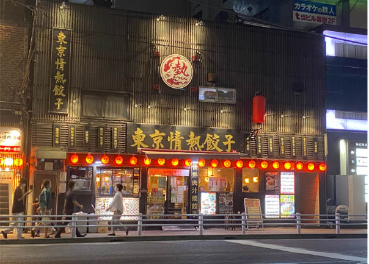
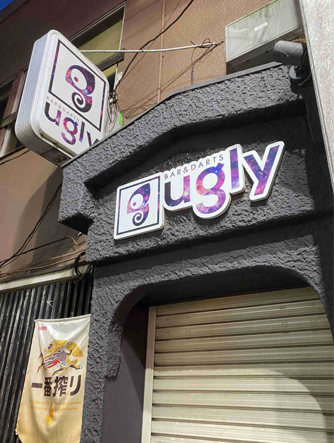
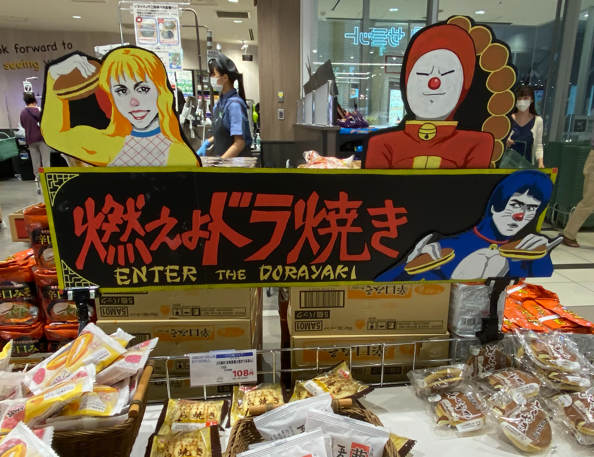

デザイン演習第２回
看板・サインと観察
2021/10/10 桜木町駅の周り 撮影者：自分

とてもおしゃれな店で、対称となるようなデザインで、赤い提灯も「情熱」を表していると思います。
2021/10/10 野毛町の周り 撮影者：自分

店名が「アグリー」のバーで、オーナーの個性が感じられます。そして、看板のデザインは結構綺麗です。
2021/10/08 スーパー「サミット」 撮影者：自分

スーパーの最も目立った場所にスタッフの描く才能が見えます。一つ買いました。美味しかったです。